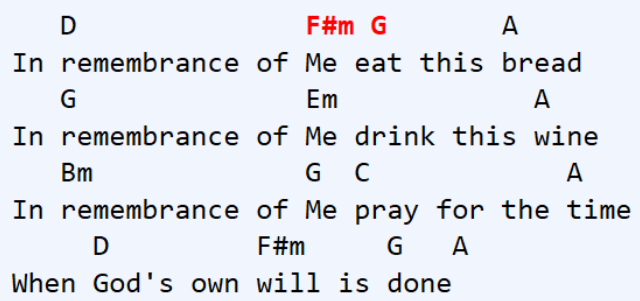
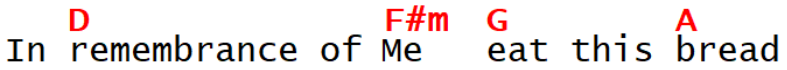

<music/> — Rationalizing chord/ lyric pairingsWhen chord symbols lose alignment with the lyrics, they lose their meaning. With WP, the pairings regularly fall out of alignment for countless reasons:
Figure 27. Lyric-chord charts with misaligned text (it gets much worse, especially with proportional fonts)
|  |
Markup was used to make the chord <c/> and lyric <l/> relationships more explicit.
Figure 28. <lyric/> lines, with lyric fragments <l/>, and chord <c/>symbols next to each other so they don't get lost
<music>
<lyric>
<l>In </l>
<c>D</c>
<l>remembrance of </l>
<c>F#m</c>
<l>Me </l>
<c>G</c>
<l>eat this </l>
<c>A</c>
<l>bread</l>
</lyric>
</music>
XPath was used to manage horizontal and vertical offsets.
Figure 29. CSS rendering with fully-automated offsets
|  |
All the CSS gymnastics cause cursor-positioning problems. Adding an edit mode solved the problem:
Figure 30. music[@view="edit"] markup
<music view="edit">
<lyric>
<l>In </l><c>D</c><l>remembrance of </l><c>F#m</c><l>Me </l>
<c>G</c><l>eat this </l><c>A</c><l>bread</l>
</lyric>
</music>
Figure 31. music[@view="edit"] rendering